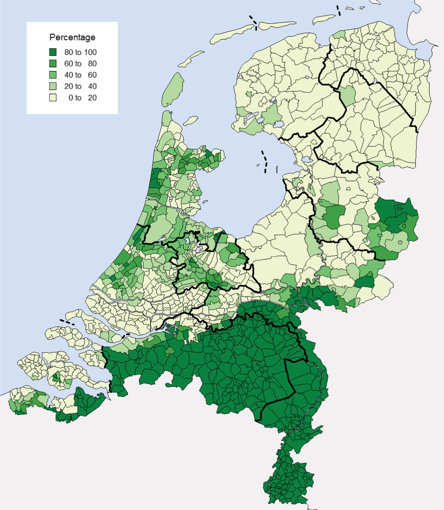

This datastory replicates a historical GIS map using an open dataset and SPARQL.
In 2015 Nynke van den Boomen & Peter Ekamper published a paper about infant mortality and causes of death in The Netherlands between 1875 en 1899. The paper makes use of innovative data and neat visualizations on Dutch maps to show the municipal distribution of infant mortality, and its potential causes. The data they used to plot these municipalities, and the share of Roman Catholic inhabitants, is largely open, namely the Historical Database of Dutch Municipalities (HDNG), and the NLGis shapefiles by Onno Boonstra. However, the GIS software used for the actual visualizations is not open, making it difficult to replicate their maps. Here we'll show how to use these data to plot historical results in Linked Data. This has the benefit of creating live, open, and interactive results. The maps created in this datastory can be shared with others by simpling copying the URL. What is more, they can be adapted live by changing the corresponding SPARQL query, for instance by selecting another year.
We can now use this table to plot the results on a map. For this we also need the polygons of Dutch municipalities in 1899. Luckily, the NLgis shapefiles are already available as Linked Data, courtesy of Gemeentegeschiedenis. Because both Gemeentegeschiedenis/NLgis and the HNDG use the 'Amsterdamse code' to refer to municipalities over time, we can use this variable to retrieve the corresponding polygons. In order to replicate the map exactly as Boomen & Ekamper, the bin width is set using the categories from their Figure 2 ([0,20],[20,40], etc.), and the same color gradient is used (green).
By hovering over the map, you will see that both the name of the municipality and the share of Roman Catholics will show. A nice interactive feature that Linked Data allows for. You can also zoom in and find your own municipality or region of interest.
Although the polygons are based on historical municipality borders (1899 or the closest one available before), the actual map is modern (OpenStreetMap). Using a function that is currently under development, we can project historical maps under these polygons. All that is needed for this is a WMS-service that provides georeferenced historical maps, such as Map Warper. Currently the number of maps to choose from is still limited, but the query below shows what is possible, using a map from 1832.
The actual Figure 2 from Boomen & Ekamper can be seen below. Comparing it with our maps shows they are almost identical. What is more, using these queries as starting points, you're able to connect to all sorts of interesting data from the HDNG or other datasets, and visualize the results.

Source:
Nynke van den Boomen & Peter Ekamper (2015) Denied their ‘natural nourishment’: religion, causes of death and infant mortality in the Netherlands, 1875–1899, The History of the Family, 20:3, 391-419, DOI: 10.1080/1081602X.2015.1022199
This datastory was created by the CLARIAH project (WP4).
For questions and suggestions please email Ruben Schalk
This version: July 2021